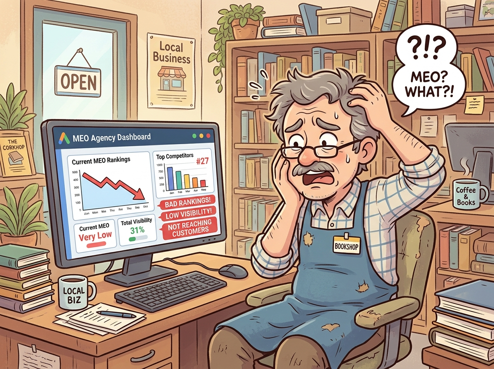
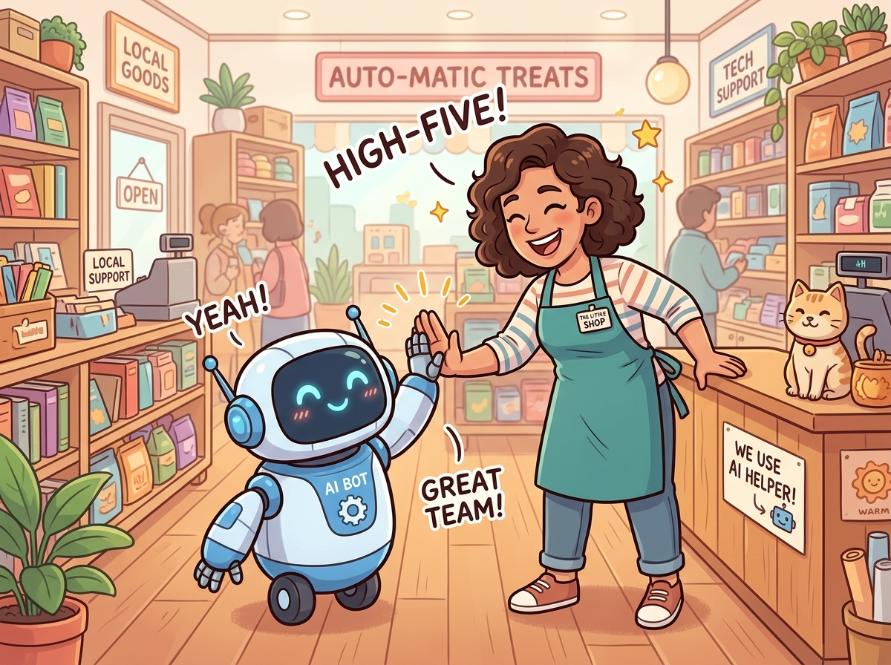
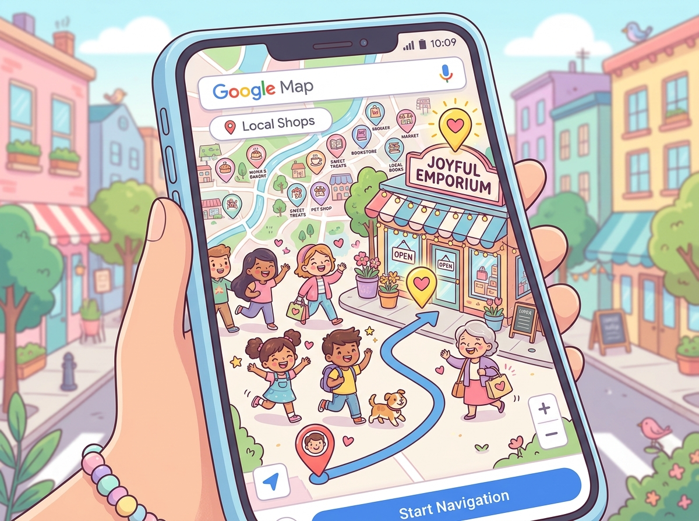

365MEO 開発仕様確認書
都田代表のMEOノウハウを長田氏の技術力で完全自動化し、祖父江社長の信用力をもって展開する本物のMEOツール『365MEO』の基本仕様合意書です。
仕様・認識確認チェックリスト
顔合わせで合意された基本仕様やプロジェクトの大義について、現時点での認識に相違がないかの確認用シートです。各項目をクリックして詳細仕様を確認し、チェックを行ってください。
詳細な仕様・大義を見る
悪徳MEO業者の蔓延と、店舗業界のコスト（単価）の壁
不毛な順位争いを煽ったり、効果が出ない形骸化した対策をするMEO業者が蔓延しています。広報費に大金を割ける大手企業とは異なり、MEOの需要が最も高いのは地域の「個店（店舗）」です。そのため、効果の出る本当に質の高いMEO対策は単価（コスト）が合わず、これまでなかなか普及しにくい現状がありました。

AI自動化による低単価化で、悪徳業者を駆逐しMEO業界を変革する
AIとテクノロジーを駆使した徹底的なシステム自動化により、人件費等の開発・運営コストを削減。本当に集客効果を発揮する本物のMEOツールを圧倒的低価格（月額19,800円（税込・予定））で広く普及させます。成果の出ない悪徳業者を駆逐し、本物の価値を提供してMEO業界の常識を根底から変革します。

不毛な順位争いから、広域ピン露出（集客重視）への転換
順位維持だけを狙う従来のやり方に対し、ユーザーの現在地に近いピン表示を狙い、毎日自動投稿でマップ上の露出面積を広げる本物のMEO手法です。

特定の1〜3キーワードのみでの最上位（1〜3位）表示に固執。それ以外のキーワードや、ユーザーの検索現在地が少し外れただけでマップに表示されず、実際の来店（集客）に結びつかないにもかかわらず、月額3万円等の高額費用を請求し続ける。
Googleマップの表示条件である「20位以内」へのピン露出を幅広く狙う。ユーザーの来店動線（現在地近くのピン表示）を最も重視し、多数 of ロングテールキーワードを毎日自動投稿することで、地図上の露出面積を最大化し確実な集客へ繋げる。
Q. 悪徳業者を駆逐した後の「市場独占」は最終目的に含まれますか？
※ もしYES（市場独占を目指す）である場合、競合他社によるロジックや技術の模倣を防ぐため、特許等の知的財産権の取得も視野に入れて検討する必要があるかもしれません。
詳細な仕様・自動投稿ルールを見る
管理画面での設定・登録項目
- 文章作成のための素材入力: ホームページ、ポータルサイト、SNS情報などを素材として入力。
- 対策キーワード登録: メインキーワードを5単語、サブキーワードを15単語まで設定可能。（メインは毎回本文に含め、サブはランダムで使い回す）
- 固定フッターの入力: 店舗名、住所、アクセス情報などの固定署名を入力。（フッターとして自動付与）
- ボタン設定: ボタン文言は「詳細」固定。遷移先URLは管理画面から指定可能。
システム動作仕様
- 投稿頻度: 毎日投稿を実施。
- キーワード使い回し: 毎回違う文章を作成。キーワードは設定した内容を全て使わなくてよいが、満遍なく使い回す。
投稿文作成（AI生成）のルール
- 与えられたメインキーワードは、毎回すべて自然に本文へ含める。
- サブキーワードのプールから2〜3語を選び、毎回違う組み合わせにする（満遍なくローテーションし、直近使った語は避ける）。
- 「誰が・どこで・何を提供しているか」を示す宣言的な事実文を毎回異なる言い回しで必ず1文入れる（AIが引用しやすい形）。
- 直近の投稿と、内容・書き出し・構成が重複しないよう、毎回違う切り口で書く。
- 本文は150〜250字程度。自然な日本語にし、キーワードの羅列にしない。
- 本文にURL・電話番号・ボタン文言・住所・会社名の署名は入れない（フッターで自動付与されるため）。
- 絵文字・マークダウン・見出し・箇条書き記号は使わず、投稿本文のみを出力する。
- 今日の日付を踏まえ、季節・時期に合う話題が自然なら盛り込む（無理に入れない）。
画像提供のジレンマとストック画像フォールバック設計
※ AI画像生成は完全不採用（ToS違反によるアカウントBANリスク回避のため）
① 写真の使い回し許容: Google規約上、実物写真の複数回投稿は違反になりません。店舗の写真提出が遅れた場合でも自動投稿を止めないためのフォールバックとして使い回しを許容します。
② 汎用ストック自動選択: 新しい画像がない場合は、オンボーディング時に初期登録された「看板・店内写真」などのストック画像からシステムがランダム選択して自動投稿します。
③ サポートフォローによる回収: 最新写真への更新は、加盟店サポートや定期フォローコール業務にてオーナーから能動的に回収・反映します。
Q. 「最新写真の回収・更新」における具体的な運用フローはどちらになりますか？
案1: 営業担当者（またはサポートスタッフ）が定期的（月1回等）に個別連絡（電話等）を取り、手動で回収して管理画面へ反映する。
案2: LINE公式アカウントから自動で「最新の写真を送ってください」と定期メッセージを配信し、オーナーから送られてきたものを管理画面に登録する運用にとどめる。
詳細な仕様・多重フェイルセーフを見る
LINE APIの障害や店舗側の連携解除による星1口コミの放置リスクを技術的に完全回避する設計です。
星1検知時、LINE通知と同時に365MEO運営事務局（管理用メールアドレス）宛てに緊急メールを自動送信。運営側でいち早く不達や放置の予兆を検知・フォローできます。
星1検知から12時間経過しても未処理の場合、本部ダッシュボードに警告を表示すると同時に、365MEOの営業担当者へシステムから自動アラート（メール等）を直接送信します。
Q. 警告が届く本部ダッシュボード（12時間放置警告）を監視・確認し、オーナーへ能動連絡する実務は「365MEOの営業担当者」とする方向で良いでしょうか？
※ 12時間放置を検知した時点でシステムから営業担当者へ直接自動アラートが送信され、それを基に営業担当者がオーナーをフォローする運用を想定しています（ジラーチ社での常時監視・代行連絡は含まれません）。
詳細な仕様・防止フローを見る
AIが古い情報や誤った営業時間等を生成して投稿・返信するリスク（ハルシネーション）を防ぐための、営業 ✕ 開発の連携運用フローです。
365MEOの営業担当から店舗オーナーへ定期的に連絡を取り、「店舗の営業時間、メニュー、休業日など、前回の連絡から変更点がないか」をヒアリングします。
営業担当から共有された営業時間等の変更点を受け、ジラーチ社（開発側）がAIプロンプトや店舗マスタデータを更新し、誤情報（ハルシネーション）を防止するチューニングを実施します。
Q. 365MEOのアフターフォロー（定期ヒアリング業務）にかかる人件費は、予算に含まれていますか？
※ 営業担当が各店舗に定期連絡を繰り返す運用コストが、既存 of プロジェクト予算および販売モデル（月額19,800円の利益構造）の想定範囲内に含まれているかをすり合わせる必要があります。
今後のご提案・要協議事項（顔合わせ後の追加提案）
事業拡大・付加価値向上のために挙がっている新規の追加ご提案です。今後のプロジェクト進捗や優先度に合わせて、3者で個別に協議・決定します。
詳細な提案内容・キャッシュバック仕様を見る
診断の提案
他社契約中の店舗オーナーへ、検証のプロによるMEO設定監査（5,000円）を提案。
厳格なプロ監査
ジラーチの検証体制で、不毛な順位争い、複数キーワード露出漏れ、返信放置等を厳格チェック。
客観レポート提出
客観的事実に基づいたフェアな監査判定レポートを店舗オーナーに提出。
移行で実質無料化
365MEOリプレイス移行で、診断費5,000円を全額キャッシュバック（ジラーチ側が負担）。
レポート提出後の判定アプローチ
現在の運用に不備がない旨をありのまま記載し信頼を獲得。金額面（月額19,800円（税込））の優位性のみを比較提案します。
不毛な順位争いによる複数ワード露出漏れ、実集客の機会損失などを可視化。365MEO移行で診断料5,000円を全額返金（ジラーチ全額自己負担）します。
Q. 診断時の具体的な「テスト項目（評価基準）」について、THANX CREATE都田氏と共同策定する方向で良いでしょうか？
※ 「どのような状態をもって『効果が最大化されていない』と定義し、監査判定するか」の具体的な監査チェックリストを、後日都田様と擦り合わせの上、実運用の基準として設計します。
詳細な検討アプローチを見る
利点: 開発コストゼロ。Google公式データをオーナーが自身で直接確認。
欠点: オーナーがログインして確認する手間があり、放置されて価値を感じにくくなるリスク。
利点: 投稿数・返信数・検索露出推移などの主要成果を月次で自動集計し、LINEやメールでオーナーへプッシュ配信。解約防止に直結。
欠点: APIデータ集計およびレポート生成の開発コスト。
初版リリース時はGBP標準の案内にとどめ、フェーズ2でAPIデータ連携による「簡易レポート送信機能」を追加実装するか、開発工数を照らし合わせ3者で決定します。
フィードバック・ご質問への回答（協議履歴）
Q. システム運用にかかるサーバー代や、AIのAPIクレジット費用（ランニングコスト）はどれくらいを見込んでおけば良いでしょうか？
1. サーバー代のシミュレーション（固定・準固定費）
| 想定契約店舗数 | 月額サーバー総額の目安 | 1店舗あたりの月間コスト |
|---|---|---|
| 100 店舗 | 5,100円 / 月 (ストレージ代含) | 約 51 円 |
| 1,000 店舗 | 15,700円 / 月 (ストレージ代含) | 約 16 円 |
| 10,000 店舗 | 86,800円 / 月 (ストレージ代含) | 約 9 円 |
※ ストック画像保管用ストレージ費用を含みます： 1店舗あたり最大100枚の画像（平均3MB/枚＝計300MB/店舗）を３６５MEO側でストック保管する前提で再計算しています。
※ 画像ストレージには世界最安水準でデータ転送量無料の「Cloudflare R2（1GBあたり約2.25円/月）」を採用します。10,000店舗分（計3TB・約3万枚）を保管してもストレージ費用は月額わずか約6,750円（1店舗あたり約0.68円）であり、全体の費用感にほぼ影響はありません。
【合意事項】ストック画像の上限について
コストが極めて安価なため、加盟店向けには「ストック画像上限なし（無制限）」を強力なメリットとして提供する方針で決定します。
※システム安全運用のための措置（バグによる無限自動保存や悪意ある超巨大ファイルのアップロード対策）として、①1ファイル最大10MB制限、②バックグラウンドでの画像自動圧縮（適正サイズへの自動リサイズ）をジラーチ社側でシステム内部に実装します。これにより、ストレージ容量をさらに節約しつつ、表示速度の高速化（SEO/UX向上）も両立します。
2. AIモデル別 API費用シミュレーション（完全従量・変動費）
・1店舗あたりの月間利用量（前提）： 毎日自動投稿30回 ＋ 口コミ返信30件 ＝ 計60回生成（約8.4万トークン消費相当）
・重要： API費用は完全従量制（使った分だけの課金）のため、他社からのボリュームディスカウントがない限り、契約件数（ボリューム）によって「1店舗あたりのAPIコスト」自体は基本的に変動しません（変わらないご認識で合っています）。
| AIモデル名 / ランク | 1店舗あたり月額費用 | 100店舗 | 1,000店舗 | 10,000店舗 |
|---|---|---|---|---|
| Claude 3.5 Sonnet (超高性能) | 約 81.0 円 | 8,100円 | 81,000円 | 810,000円 |
| GPT-4o (高性能) | 約 58.5 円 | 5,850円 | 58,500円 | 585,000円 |
| GPT-4o-mini (軽量・安価) | 約 3.51 円 | 351円 | 3,510円 | 35,100円 |
| Gemini 1.5 Flash 最安・推奨 | 約 1.76 円 | 176円 | 1,760円 | 17,600円 |
💡 結論とジラーチ社の推奨方針：
都田様が他事業で利用されているClaude（診断用）は高度なロジック処理が必要なため1回50円と高額ですが、今回の「MEO自動投稿・口コミ返信」はテキスト生成に特化しているため、月額クレジット単価が劇的に安い「Gemini 1.5 Flash」や「GPT-4o-mini」で十分なクオリティを達成可能です。
最安の **Gemini 1.5 Flash（月額1店舗あたりわずか約1.76円）** を採用すれば、1万店舗契約でも月間API費用はわずか1万7千円台で済みます。加盟店から月額19,800円の利用料をいただくビジネスモデルに対し、AI費用コストは **「0.01%以下」** となるため、API料金の上限課金制限や赤字化のリスクは全く考慮する必要がありません。
【補足】AIクレジットの「上限」と「無限利用」について
- 物理的上限（無限利用の可否）: APIクレジットには「月間何回まで」という物理的な制限はありません。カードを登録して自動チャージ設定にしておけば、この低単価のまま実質無制限に使い続けることが可能です。
- セキュリティ用「予算上限」の設定: 万が一のプログラムのバグ（無限ループ等）や第三者による悪用で予期せぬ多額の請求が発生するのを防ぐため、API管理画面にて「月額最大3万円まで」などの安全なセーフティ予算上限を設定しておくことが実務上のベストプラクティスです（上限値は規模拡大に伴って自由に変更可能です）。
- 他社ツールで上限が設定されている理由: 競合ツールが「月間AI生成30回まで」等の上限を設けているのは、API自体の制限ではなく、開発会社が自社の利益率を高めるためのビジネス上の制限（または上位プランへの誘導フック）です。自社システムである365MEOではその心配はありません。
【ご質問の背景（2つの懸念点）】
1. Claude APIの単価： 現在365MEOとは別の事業でClaude APIを使った企業向け診断ツールを動かされているが、その際に「1回あたり約50円」のAPI課金コストが発生しているため、本事業でも膨大なコストがかかるのではないかという懸念。
2. 既存ツールの文章生成上限： 既存の競合MEOツールでも、AI文章作成機能に「月間の作成上限」が設けられている事例があり、それはAPI課金発生のリスクを抑えるための仕様ではないかという予想。